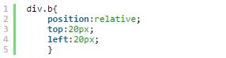
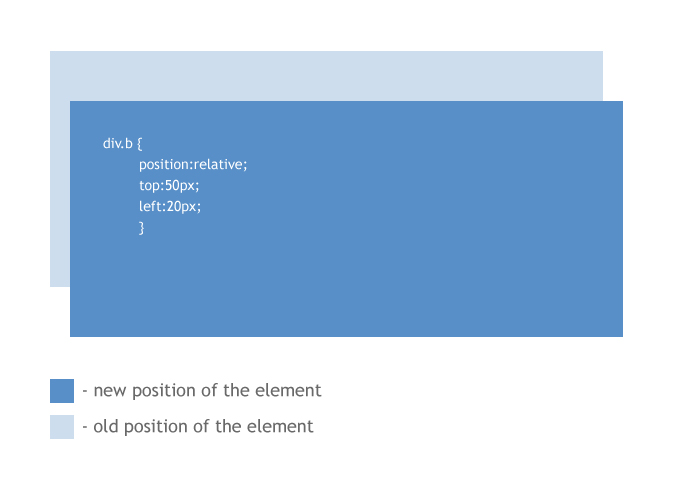
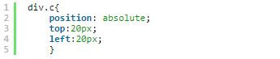
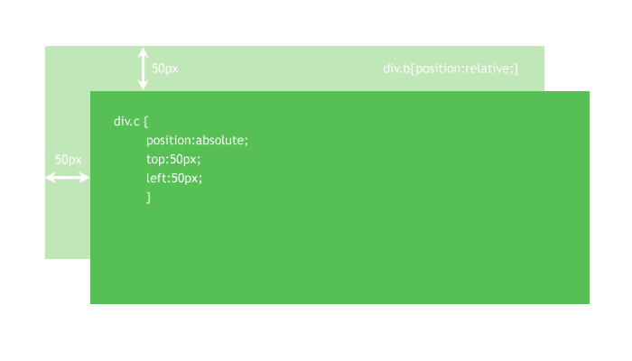
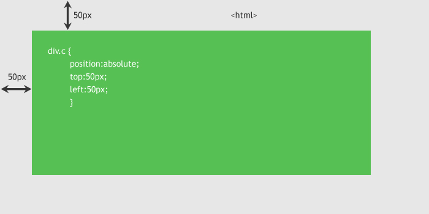
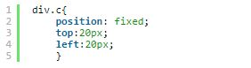

This week was all about learning how to use CSS and HTML to style and structure my first website. It was definitely a daunting task at first, and I had no idea where to start. After viewing various YouTube videos and reading up on best practices, I was able to become much more comfortable with creating my website from scratch.
One of the most difficult concepts for me to grasp was how to position images, text, and objects on my website. It seemed as though certain elements reacted differently when I tried moving them around, so I did some research to better understand why. It turns out that there are 3 primary means of positioning elements using HTML and CSS: Relative, Absolute, and Fixed positioning.
Using Relative Positioning essentially means that if you are re-positioning an element on a website, its position will be based off of its original position, and not the web page as a whole. For example, if you have an image which is placed in the middle of a web page, and its positioning is set to Relative, then when it is given the attribute left: 2px, it will move 2px from the middle of the screen rather than 2px from the absolute position. Relatively positioned elements are used a lot of the times as the parent elements of absolutely positioned ones.


Using Absolute Positioning means that an element can be positioned using left,right,top,bottom,etc based on the relatively positioned elements above it.

Here is an example where the absolutely positioned element has a relatively positioned parent element

Here is an example where the absolutely positioned element does not have a relatively positioned parent element and as a result is just positioned according to the edge of the website.

The last type of positioning is Fixed Positioning. This means that the element is positioned purely accordinging to the browser window. A fixed element won't move even if you scroll up or down on the website.

This was, and still is a very confusing subject to grasp, but I think a real understanding of it comes from practicing and viewing visually how elements can be moved. I hope that this blog post provided a clearer understanding for how elements are positioned on websites!
Thanks for reading!
Vineet Rastogi